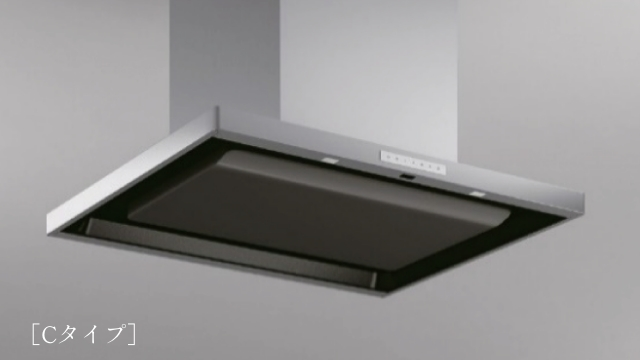
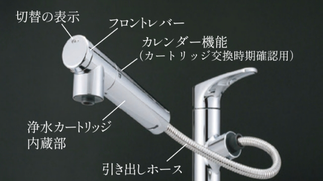
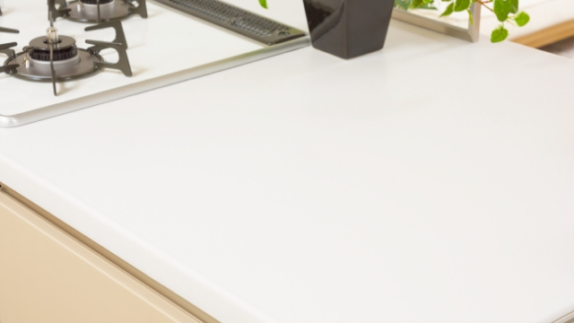
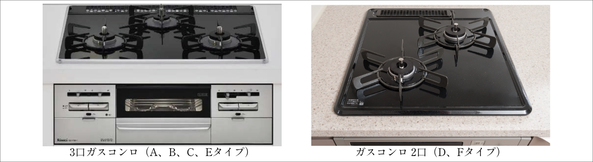
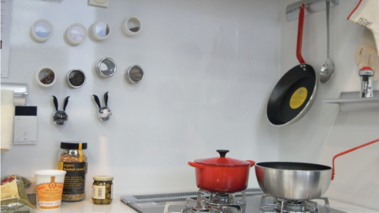
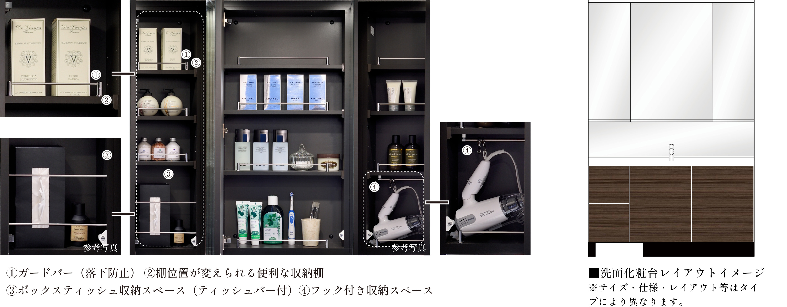
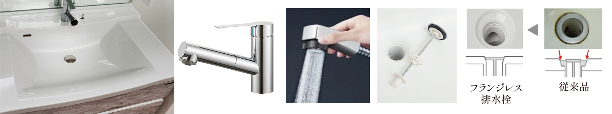
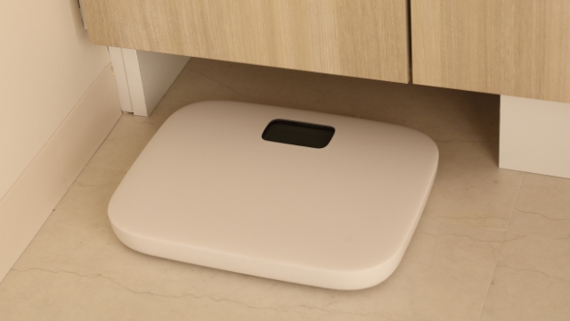
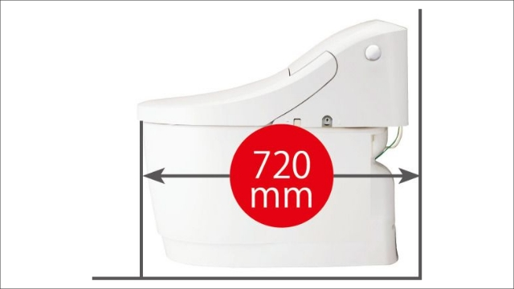
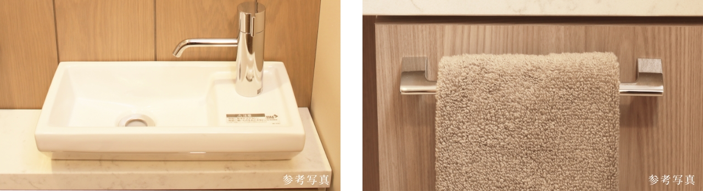

エレベーター内操作パネルのインターホンボタン（SOS）を押すと警報ボタン操作時と同様の対応になります。
EQUIPMENT
SCROLL
住む人の時をかなでる、
大切な場所。
暮らしに安心と心地よさをもたらす、
快適かつ機能的な設備。
日々の暮らしを充実させるため、
住まいの隅々まで施された快適への工夫。

参考写真
KITCHEN キッチン
すっきり・たっぷりの収納に、使いやすさを追求した
機能的なシステムキッチン
※キッチンの仕様・形状・レイアウト等タイプにより異なります。
※ガスコンロ［デリシア］、キッチンカウンタートップ面材［フィオレストーン］はオプション（有償）です。レンジフードの形状は壁付スリムタイプ（Cタイプはセンターマントルフード）です。
コンロ前のガラスはオプション（有償）（Cタイプを除く［形状は異なります］）です。ガスコンロ前・横の仕様・形状はタイプにより異なります。詳しくは図面集参照。
-

参考写真
レンジフード［シロッコファン、整流板付］
油汚れも落としやすく、煙を逃さない整流板付きのレンジフードを採用しました。
（レンジフードはタイプにより異なります） -

参考写真
浄水機能付シングルレバーハンドシャワー水栓
水栓には浄水機能付シャワー水栓を採用しました。ホースが引き出せるのでシンクの隅々のお掃除やポットへ浄水を注ぐ時にも便利です。
-

参考写真
人造大理石［アクシーマ］のカウンタートップ
キッチンのカウンタートップには、あたたかみがあり高級感あふれる人造大理石天板［アクシーマ］をご用意しました。お手入れは濡れた布などで拭き取るだけでキレイが長持ちします。
-

ガスコンロ
ワイドゴトクを採用した美しい質感と輝きのあるガスコンロ。ガスコンロは熱の立ち上がりが早いため温度調整がしやすく、使用できる器具も多いです。
-

参考写真
ホーローキッチンパネル
汚れが染み込まず色あせもなく、マグネット小物が使える便利なホーローキッチンパネルを採用しました。
参考写真
BATHROOMバスルーム
自動お湯張り・保温、浴室暖房換気乾燥など
さまざまな機能を備え清掃性を考えた快適な浴室
バスルームのサイズ・形状・仕様・レイアウト等はタイプにより異なります。
-
フラットフロア※、低床浴槽
洗面室と浴室はフラットフロア※で、浴槽は低床の浴槽を採用しました。お年寄りやお子様に優しい設計です。
※水返しは設置されます。
-

浴槽保温材と保温組フタのダブル保温構造でお湯が冷めにくい※サーモバスS
浴槽を浴槽保温材ですっぽり包み、専用の保温組みフタを採用することにより、お湯が冷めにくい優れた保温性を発揮します。入浴時間の異なるご家族でも時間を気にせずお好きな時間に入浴できます。
※メーカー公表（4時間後の温度変化は2.5℃）による。
-
壁付サーモ水栓
サーモスタット付のシャワーバス水栓です。
-
スライドバー
昇降ハンドルを操作することにより、シャワーの設置高さを調節できます。
-
参考写真
エコアクアシャワーヘッド
空気を含んだ大粒の水滴で浴び心地の良さと節水性を両立したシャワーヘッドです。
-
参考写真
パッとゴミがまとまって、カンタンにポイ パッとくるりんポイ排水口
シャワーなどの排水時に渦を起こして、髪の毛やゴミをヘアキャッチャーの中央にパッとまとめます。ポイッとするだけでカンタンにゴミ捨てができます。
-
参考写真
とるピカスリムカウンター
小物等を置くのにピッタリのとるピカスリムカウンターは、カンタンに取り外して洗えるので、キレイをキープできます。
-
多機能で使い勝手が良い、温水浴室暖房乾燥機
浴室暖房乾燥機により外出中や夜間でも洗濯物が気兼ねなく干せ、乾燥機能で雨の日でも短時間の乾燥が可能です。さらにバスルーム内の湿った空気を吸い込み、屋外に放出することで、カビの発生防止にも効果を発揮します。夏は送風、冬は暖房機能で一年中快適なバスタイムをお楽しみいただけます。

参考写真
POWDER ROOMパウダールーム
化粧用品の小物収納やヘルスメーター収納など
使い勝手に配慮した機能的な洗面化粧台
※サイズ・仕様・レイアウト等はタイプにより異なります。
-

参考写真
三面鏡と三面鏡下の中間ミラー、三面鏡扉裏収納
洗面化粧台には大型鏡の三面鏡と、三面鏡下にはお子様目線の中間ミラーが設置されます（三面鏡中央の大型鏡には曇り止めヒーターが設置されます）。また三面鏡扉裏には収納する小物サイズによって、棚板位置が変更できる収納棚を設置しました。
※フック付収納スペース、ボックスティッシュ収納スペースの設置位置、フック金具・仕様・形状・仕上等タイプにより異なります。
-

人造大理石の天板・ボウル一体型カウンターと節湯型のシングルレバー混合水栓
お手入れが簡単な、天板・ボウル一体型カウンターを採用しました。また、水栓のヘッド部分は引き出すことができるので（シャワーに切り替えができます）、洗面ボウル内を隅々までお手入れすることができます。
-
参考写真
洗面ボウルシンク下の開き扉収納と2段引き収納
洗面ボウルシンク下には開き扉収納と、2段の引き出し収納を設置しました。用途により収納を使い分けることができるので大変便利です。
※開き扉収納はA,C,Eタイプは観音開き、E,D,Fタイプは片開きとなります。
-

参考写真
ヘルスメーター収納
洗面化粧台収納の下部にはヘルスメーターを収納するスペースを設けています。使う時だけサッと取り出せる便利なスペースです。
※設置位置はタイプにより異なります。
-
参考写真
メラミン化粧板扉、レール引手仕様
メラミン化粧板にレール引手でスッキリとした納まりを実現します。
※素材・仕様等は異なる場合があります。
参考写真
TOILETトイレ
オート便器洗浄やさまざまな機能が付いた便器は
お掃除ラクラクの節水型トイレ
※手洗器・カウンター・収納等の仕様・形状・設置位置等はタイプにより異なります。
※壁はクロス仕上になります。
※手洗いカウンタートップ面材（フィオレストーン）はオプション＜有償＞です。
-

スッキリコンパクトタイプの便器（A、Eタイプのみ）
従来のタンク付きトイレと比べて奥行きが短縮され、動作空間が広がって居心地よく過ごせるトイレ空間を実現しています。
-
参考写真
ハイパーキラミック仕様
表面にキズがつきにくく、汚れに強い便器素材を採用。ISO準拠の抗菌（銀イオン）パワーで細菌の繁殖も抑えられます。高硬度のジルコンを釉薬の表面まで含んでいるのでキズがつきにくく、陶器の美しさを長く保てます。
-
参考写真
パワーストリーム洗浄
強力な水流が便器鉢内をすみずみまで回り、少ない水でもしっかり汚れを洗い流すパワーストリーム洗浄を搭載しています。
-
参考写真
停電時対応トイレ（A、Eタイプのみ）
万が一の停電の際にも、手動で便器の水を流すことができます。
-

オート便器洗浄※などのさまざまな快適機能が満載
便座から立ち上がると自動洗浄※［着座時間50秒未満／小洗浄、着座時間50秒以上／大洗浄（目安）］するオート便器洗浄の便器には、洗浄・清掃・エコ・快適・清潔機能等のさまざまな快適機能があり大変便利です。
※男子小洗浄はありません。
-
参考写真
スッキリノズルシャッター（A、Eタイプのみ）
男子小用時など、使わない時はノズルは収納されていて、いつも清潔なスッキリノズルシャッター（着脱式）を採用しました。
-
参考写真
つぎ目が無いキレイ便座
汚れが入りやすいつぎ目がありません。新素材により気になる便座裏の汚れもサッと一拭きのキレイ便座を採用しました。
-
参考写真
お掃除リフトアップ（手動）（A、Eタイプのみ）
お掃除ができなかった隙間汚れが、お掃除リフトアップで便座を持ち上げて奥まで簡単に拭き取れて、気になるニオイの元をカットします。
-
参考写真
フチレス形状
便器のフチを丸ごとなくし、サッとひと拭きでキレイになるフチレス形状便器を採用しました。お掃除がラクラクです。
-

カウンター付陶器ボウルの手洗器とタオル掛（A、Eタイプのみ）
トイレには小物が置ける便利なカウンター付の陶器ボウル手洗器を設置しました。陶器ボウルは光沢があり美しく、傷がつきにくくお手入れが簡単で美しい状態を長く維持できます。また、手洗器下の扉部分にはタオル掛を設置しました。
-
吊戸棚
トイレ上部には掃除用品やトイレットペーパーなどが収納できる便利な吊戸棚を設置しました。
※タイプにより吊戸棚の仕様・サイズ等異なります。 -
収納イメージ
手洗器下の収納（A、Eタイプのみ）
手洗器下には、洗剤やお掃除用具などのトイレアイテムが置ける便利な収納を設置しました。空間を無駄なく有効活用できます。
-
参考写真
トイレドアの内鍵
トイレのドアには内鍵を設置しました。非常解錠装置が付いているので緊急時には廊下側から開けることができます。

Image photo
AMENITYアメニティ
心地良い暮らしを充実させるため、
細やかな心遣いで施された快適への工夫。
-
参考写真
ガス温水式床暖房システム
リビング・ダイニングには、足元から部屋全体を温めるガス温水式床暖房を採用しました。床暖房は室内に燃焼させるものがないので定期的な換気も不要で、お子様やお年寄りの方にも安心です。また、塵や埃が舞い上がりにくいため、室内の空気の汚れがあまり気になりません。
-
参考写真
ペット飼育※とペット足洗い場
ペット共生に配慮して、1階にペット専用の足洗い場を設置しました。また、エレベーターには「ペット表示灯」を設け、ペットが同乗していることを知らせることができます。
※ペット飼育細則に基づきます。ペット飼育の際にはペット委員会に入会していただき、「ペット委員会運営費」として月額100円／戸の費用が必要になります。
※設備形状・仕上げは実際とは異なります。 -
24時間ゴミ出しOK※
建物内に、24時間対応のゴミ置場（脱臭機付）を設置しました。外出ついでや深夜などにもゴミを出すことができるので大変便利です。
※ゴミの搬出は原則、自治体が定めた収集日もしくは前日となります。また、粗大ゴミの搬出は粗大ゴミ持ち出し場所への搬出となり、自治体が定めた収集日、もしくは前日となります。
-
image photo
快適なインターネット接続サービス
「サイバーホーム」を導入最大1Gbpsの高速型光回線をマンションに引込み、お部屋までは専用のLANケーブルによる最大1Gbpsのインターネットを全住戸に標準装備しました。お部屋のLANケーブルの差込口にパソコンを接続すれば、すぐにインターネットがご利用いただけます。（利用料は管理費に含む。但し、パソコン本体、接続ケーブル、有料サービス利用料金等は別途負担）
※導入予定の通信速度は最大1Gbpsとなります。最大1Gbpsとは技術規格上の最大値です。（ベストエフォート方式）。実使用速度はお客様のご利用環境や回線の混雑状況等によって低下する場合があります。※各種コンテンツのサービス内容は地域により異なります。※契約条件や内容等は変更になる場合があります。詳しくは係員にお尋ねください。（2022年12月現在） -
image photo
多彩なチャンネルが楽しめる
CATV（ジェイコム札幌）を導入豊富なチャンネルが揃うケーブルテレビ（ジェイコム札幌）を導入しました。地上デジタル、BSデジタル、110°CSデジタル等の放送波等さまざまなジャンルのコンテンツが楽しめるケーブルテレビです。
※チューナー・契約料・視聴料は別途必要となります。※一部ご視聴いただけないチャンネルがあります。 -
人感センサーライト、フットライト※
各住戸玄関には人を感知すると照明が自動点灯し、時間が経つと消灯する人感センサーライトを設置しました。暗がりの帰宅時にも安心で、電気代の節約効果があり経済的です。また、各住戸内の廊下には夜間でも歩きやすいようにセンサー付フットライト※を設置しました。

Image photo
SECURITYセキュリティ
「安心な暮らし」のために、
さまざまな最新のセキュリティシステムを導入。
3つのセキュリティラインが
安全な暮らしを見守ります。
敷地内に3つのセキュリティラインを設け、不審者の不法侵入を防ぎます。マンションの敷地内（1次セキュリティ）、建物の共用部（2次セキュリティ）、そして住戸内（3次セキュリティ）へと、専有部に近づくにつれ防犯対策を強化していきます。
「狙われにくいこと」「侵入を未然に防ぐこと」そして実際に「侵入が困難なこと」、その上で「プライバシーの保護まで考えること」を念頭において、外構・共用部から住空間の細部に至るまで、１次から３つのセキュリティを効率的に重ね合わせました。明和地所の「SECULIO＝セキュリオ」は、当社の経験とノウハウを基に創り上げたセキュリティシステムです。
全住戸の玄関と2階住戸の開口部（FIX窓を除く）には防犯センサーが設置されます。
※トリプルセキュリティ概念図およびSECULIOはセキュリティ概念についての内容で、
本物件のメインエントランス以外の出入口セキュリティラインは対象外となります。
-
1次セキュリティ隣地境界等

隣地境界フェンス（参考写真）
隣地境界線沿いをフェンスもしくは塀等で区画をすることにより、隣地からの侵入を未然に防ぎます。また、道路境界線に沿った部分には植栽を効果的に配し、出入りできるルートとエリアを限定します。共同住宅として堂々たる入り口の構えを持つ事で、侵入者の心理的な障壁となる効果を創出します。
-
2次セキュリティ建物共用部
防犯カメラ（参考写真）
建物内に侵入する不審者を制限するエリアです。「オートロックの区画」といわれ、マンション専用の鍵を使わなければ建物内に入れないシステムとなっております。建物内の要所には防犯カメラも設置されています。
-
3次セキュリティ専有部
ダブルロック玄関ドア
（参考写真）住戸内（専有部）に対する防犯区画です。侵入者に狙われやすい各住戸の玄関ドアには、ピッキングによる解錠がしにくいロータリーシリンダーキーを2箇所に設けたダブルロック、防犯サムターン、鎌付きデットボルト等を採用し、防犯性を高めています。
日々の安心を見守る先進のセキュリティ
全住戸にカラーモニター付インターホンを設置しました。来訪者を映像と音声で確認できるので安心です。
さらに防犯カメラ付のエントランスのオートロックに、専有部玄関ドアのダブルロックと、安心のセキュリティシステムを採用しました。勧誘セールスの訪問やマンション内への不審者の浸入を未然に防ぐ、安心のセキュリティシステムです。

概念図
エントランス
-

参考写真
-
エントランスオートロック
高いセキュリティ性と優れた操作性を備えたノンタッチキーシステムを採用しました（ICチップ内蔵のノンタッチキーによりキーをかざすとエントランスドアが解錠できます）。
■来訪者は各住戸内からの解除信号によってオートロックが開かれます。
■各住戸玄関ドアの施・解錠はリバーシブルキーを挿入（上下シリンダー部）して操作します。
共用部・エレベーター
共用部の防犯カメラ、エレベーター内モニター・防犯カメラ・警報ボタン付エレベーター
共用スペースには防犯カメラを設置しました。また、各階のエレベーター前にはエレベーター内モニターを設置し、エレベーターには防犯カメラと警報ボタンを設置し、セキュリティに配慮しました。
-

参考写真
防犯カメラ
-

参考写真
乗り場液晶インジケーター
-

参考写真
非常ボタン

住戸部分
-
参考写真
ダブルロック玄関ドア
玄関扉にはダブルロックを採用しました。
-

参考写真
鎌付デッドボルト
破壊工具を使用しての暴力的不正解錠にも対応できるように、鎌付デッドボルトを装備しました。
-
参考写真
ドアガード
玄関ドアには無理矢理ドアを開けることを防ぐドアガードを設置しました。
-
参考写真
スイッチ式サムターン
「サムターン回し」を防止するための機構を持つスイッチ式サムターンを採用しました。
-
ロータリーシリンダーキー
ピッキング対策として、理論鍵違い数は約1,000億通りという2WAYロータリータンブラー方式とロッキングバー方式を組み合わせたハイセキュリティシリンダーを採用。
※図はシリンダー内部をわかりやすくするために、部品の一部を省略して描いています。
-
カラーモニター付インターホン
エントランスの来訪者を音声と画面で確認できるカラーモニター付インターホン（親機）を採用しました。ハンズフリーで応答できます。
-
緊急放送・非常通報機能
緊急事態の発生など万一の場合は、管理事務室から全住戸へ一斉放送が可能です。また、住戸内で危険を感じた時や非常事態が発生した場合には、「非常ボタン」を押すとセコムコントロールセンターに自動通報されます。
-
セコムと提携の24時間セキュリティ・防災［異常］対応ネットワークシステム
各住戸で非常事態の発生や危険を感じた時に、インターホンの「非常押しボタン」が押されると、その情報は管理事務室内の防災監視盤を通じて「セコムコントロールセンター」に自動通報されます。万一の場合には警察署や消防署等の関係機関にも緊急連絡します。また、管理事務室では給排水設備、電気設備など共用部の異常警報を24時間オンライン監視を行い、万一の故障時には専門技術者などが即時に対応します。
全住戸の玄関と開口部（2階のみ）に防犯センサー※を設置
-
2階住戸の開口部にマグネットタイプの防犯センサーを設置しました。外出やおやすみ前にセンサーをONにすれば不正開錠時にインターホンが警報を発し、セコムに通報されます。
※住戸内での防犯センサーのセットはインターホン（親機）を使ってセットします。
※防犯センサーはFIX窓を除く。 -

参考写真

Image photo
STRUCTURE構造
「基礎構造および工法等・建物構造」
建物の耐震強度はもちろんの事、住まう方の安心と安全に配慮しました。
-

概念図
建物を安心、安全に支える強固な基礎構造
建物を支える地中の支持地盤に、頑強な杭を打つことで躯体を支える杭基礎工法を採用しました。杭は支持地盤まで確実に打ち込み、建物全体をしっかり支えます。
-
参考写真
鉄筋コンクリート造
建物の構造は、引っ張られる力に強い鉄筋と、圧縮される力に強いコンクリート部材で構成される鉄筋コンクリート造で、強度、剛性、耐久性に優れた躯体構造を実現します。
-
外壁・床構造
外壁は約150mm以上、床は約200mm以上※のコンクリート厚を確保。地震に強く雨風による建物の劣化を軽減し、強度と耐久性を実現します。
※一部除く。
-
参考写真
建物の強度を高めるダブル配筋
建物の主要な壁はコンクリート内の鉄筋を二重に配するダブル配筋としました。シングル配筋に比べて高い強度を発揮し、建物の耐久性を保ちます。
※非構造壁を除く。
-
概念図
戸境壁
住戸間の戸境壁は約180mm以上のコンクリート壁、または乾式耐火間仕切壁約136mm（厚さ約260mm程度のコンクリート壁の遮音性能に相当）とし、音の伝わりを軽減し、住まいの遮音性と安全性に優れた構造を実現します。
-
参考写真
より粘り強さを増す配筋方法（溶接閉鎖型フープ筋）
建物を支える柱（柱の接合部分、間柱は除く）部分に巻く鉄筋（フープ筋）は、フックのないリング状に溶接された溶接閉鎖型にすることで、柱自体の強度をさらに高めています（一部除く）。
-
概念図
構造スリット（耐震スリット）
柱と梁が一体化したラーメン構造でできた建物の骨組みである「柱・梁」と「壁」をコンクリートで一体として造るのではなく、それぞれの間に「スリット（すき間）」を設け、専用の部材を設置しています。主にバルコニーや共用廊下側の壁（非耐力壁）と柱の間等にスリットを設けることにより、地震時に柱や梁に余分な力をかけることなく、建物が大きな被害を受けるのを防いでいます
※一部を除く。


※掲載のイラスト等は概念図、参考CGです。設備・機器の写真等は他物件のクリオ ライフスタイルサロン（一部有償設計変更あり）を撮影した参考写真のため仕様・設備が異なる場合があります。一部写真は住設機器の各メーカーより提供を受けたもので一部変更になる場合があります。家具・調度品、有償オプション等は販売価格に含まれません。また一部現場写真、その他は参考写真（同一の形質、内容）となります。